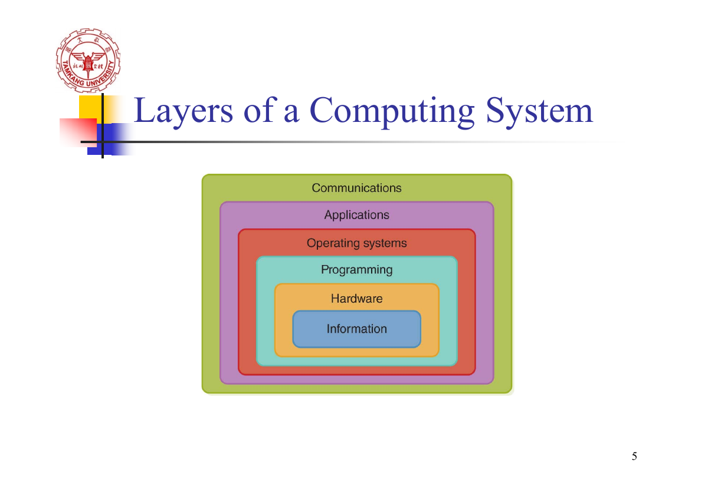

反相器 Inverter
X = A′輸出與 A 相反；只吃一個輸入。
從進位換算到邏輯閘與 CPU。先看推導，再做英文題，作答後用中文解析核對。
1 1 1
0 1 1 1
+ 0 0 0 1
─────────
1 0 0 0
看二進位加法步驟 →
練習電路繪圖、完整真值表與作業解法。各單元共 92 題，含 8 題電路導練與 2 題 Huffman 末尾檢核。英文題目附中文逐步解析，並標示題目來源。
來源：計算機概論 → 教材 → 實習課PPT，使用本次提供的 68 頁 PDF 核對。頁碼均為 PDF 頁碼；這份講義仍未明文確認期中出題者。
| 助教簡報 | 實際內容 | 在這裡怎麼練 |
|---|---|---|
| p.5–21 | 第一章與 Quiz 1 檢討；換算、二進位加法。 | 原小考題已有收錄，補上助教檢討頁碼；不用重做一套重複題。 |
| p.22–38 | 資料表示、壓縮、邏輯閘、加法器、MUX、latch。 | 各教學單元增加實習對照；先讀規則，再操作原有互動。 |
| p.39–46 | Exercises 55–62：公式畫電路、電路填真值表。 | 預設練 p.40、42、43、44。其餘 4 頁標「實習課未講」，需勾選才進入教練。 |
| p.47–59 | Homework 1 配分與完整檢討。 | 補數分開寫圖樣／有號值／溢位；Huffman 同時檢查碼字和殘留位元；浮點數依 p.59 採截取。 |
| p.60–68 | 單位、架構、PC／IR、指令週期、儲存與平行處理。 | 對照第五章各節現有題目；此部分是講義摘要，不把自編情境題改標為考古題。 |
p.36 半加器：「A 與 B 相同時 Carry 為 1」少了條件。00 時兩輸入相同，但 Carry=0；只有 11 才 Carry=1。應以同頁真值表及 Carry=A·B 為準。
p.58 Huffman：依 p.57 碼表，原題兩串分別留下 11 與 1，尚未到葉節點。檢討的分組相當於各在末端增加一個 0；網頁把原字串和補齊版本分開，避免默默補 bits。
「實習課未講」是講義的標示，並不等於正式排除考試範圍；期中範圍仍依課程公告。
使用助教建樹結果：A=01、B=000、I=10、M=111、S=110、X=0011、Z=0010。每讀到一個完整碼字才輸出字母。
公式畫圖：先處理反相與括號，再接後一層。看圖填表：由輸入往右逐閘算，把中間結果留下；XOR 前多一條弧線，小圓圈是反相。
依講義連線重畫，G1、G2 等為本站加入的中間節點名稱。線路交叉只有標圓點才相接；教練可核對邏輯，手繪電路仍需自行練習。
35 個單元、92 題，直接放在各節教學後面。英文題目與作答欄位，作答後看中文解析；可保存計算筆記、重練本節或只練錯題。
來自本學期 2026/09/29 實習課小考 1 及 2026/10/06 Quiz。保留已出題目的數值與要求，題幹重新排版；選項順序會打亂。
來自 115-1 Homework 1，另標「作業原題」。部分題目增加核對欄位或明列規則；解析為本站推導，非教師公布解答。
8 題電路繪圖／真值表，2 題 Huffman 末尾檢核。依實習課例題重編作答欄位，逐題標頁碼；不是新增 10 題歷屆考題。
尚無老師原題的單元，依本節講義補題，逐題標示「非歷屆原題」。第五章題目仍標為自編；第四章另補實習講義導練。
來源範圍：目前確認的是本學期已出小考與作業，尚未取得往年同課考卷；因此不把自編題或作業混稱為往年考試題。各題附來源與題號，TronClass 來源連結需有課程權限。練習本身不需登入。
小考題保留答案要求與選項文字，重新排版；中文解析另寫。作業題保留數值，補數另問有號解讀與溢位；Huffman 分支與實習課 p.56–57 相符，另檢查 p.58 原字串的殘留位元；RLE 明示長度大於 3 才改寫。浮點數原題現依實習課 p.59 採截取，自編題仍依題目明示規則。紙本作業要求的計算過程仍需自行練習，網頁只自動核對答案欄位。
這一章在回答三個問題：電腦系統由什麼組成？它怎麼一步步發展？計算機科學在研究什麼？先把英文名詞連到它的工作，再記人物和世代，比只背一串縮寫容易。
來源：ch01.pdf 全 22 頁。硬體／軟體世代的年份依講義分期；軟體和設備名稱保留講義中的例子。
先分清硬體與軟體，再用六層架構看它們如何合作。
講義把 computing system 定義成一個 dynamic entity（動態實體）：它接收環境中的資訊、處理問題，並與環境互動。例如你按下鍵盤，系統處理輸入，畫面顯示文字；這一連串行為就是系統正在運作。
Hardware 是實體元件。講義例子有 printer（印表機）、circuit boards（電路板）、wires（線路）、keyboard（鍵盤）。它們能接收、傳送或處理實際的訊號。
辨認方法：看這個名詞指的是設備或元件，還是提供指令的程式。
Software 是提供 instructions（指令）的 programs（程式）。例如「把輸入的文字顯示出來」這個行為，需要軟體告訴硬體要怎麼做。
理解用例：手機的螢幕是硬體；執行中的聊天程式是軟體。作業系統也是軟體。
講義第 5 頁的圖，由內到外是 Information → Hardware → Programming → Operating systems → Applications → Communications。最內層關心資訊，外側逐步加入操作資訊的設備、程式、管理、應用與通訊。

先分硬體／軟體，再記 Information → Hardware → Programming → OS → Applications → Communications。Quiz 1 的選項只列到 Application，不表示講義最外層 Communications 消失。
把每個人物連到一項貢獻，再理解這項貢獻讓什麼變得可能。
這段歷史可以沿著一條線理解：記錄數值 → 機械運算 → 用編碼控制動作 → 設計計算機 → 撰寫計算步驟 → 研究計算的理論。這樣遇到人物配對題，就能從他的工作找答案。
Babbage＝機器設計；Ada＝程式與迴圈。兩人都與分析引擎的脈絡有關，但配對時要看題目在問機器，還是程式設計。
Harvard Mark I、ENIAC、UNIVAC I 都是講義列出的早期電腦。講義指出它們開啟數學、物理、工程與經濟等領域的新應用。
Fortran／COBOL／Lisp 是語言；Mosaic／Netscape 是瀏覽器。先判斷名稱是哪一類，選項就容易排除。
完成一組就會鎖定；配錯時會解釋那項貢獻對應誰。
先記代表元件，再補上每一代解決了前一代的什麼問題。
四世代主線是 Vacuum Tube → Transistor → IC → LSI／VLSI。這在描述硬體元件與整合程度的演進；磁鼓、磁芯、磁帶、磁碟則是另一組與記憶及儲存有關的名詞，兩組要分開辨認。
| 世代 | 代表元件與改進 | 其他講義重點 |
|---|---|---|
| 第一代 1951–1959 | Vacuum Tube（真空管） 體積大、可靠度較低、發熱多 | Magnetic Drum（磁鼓）作為記憶體；Card Readers → Magnetic Tape Drives；輔助儲存採循序存取。 |
| 第二代 1959–1965 | Transistor（電晶體）取代真空管 快、小、耐用、便宜 | Magnetic Cores（磁芯）取代磁鼓；Magnetic Disks（磁碟）取代磁帶，可直接存取。 |
| 第三代 1965–1971 | Integrated Circuits（IC） 把原本分散在電路板上的電路整合進晶片；更小、便宜、快、可靠 | 電晶體也用於記憶體；Terminal（終端機）帶有鍵盤和螢幕；講義介紹早期 Moore’s Law。 |
| 第四代 1971 起 | LSI／VLSI（大型／超大型積體電路） 晶片整合技術進步 | PC、Workstations、CISC／RISC、可攜式電腦；講義列 IBM、HP、Apple、Sun；修訂版 Moore’s Law。 |
Sequential（循序）像從前面依序讀資料；Direct（直接）能定位要取出的資料。講義用磁帶與磁碟來比較兩者。
理解用例
像要找第六筆紀錄：循序方式一路讀過前面的紀錄；直接方式可指定要找的紀錄。這個比喻用來理解「存取方式」。
CISC＝Complex-instruction-set computer（複雜指令集）。RISC＝Reduced-instruction-set computer（精簡指令集）。
先抓 Complex／Reduced 這兩個英文詞。它們是在分指令集設計；看到名詞，先回答它代表哪種設計。
Portable computer 的講義例子有 notebook、laptop、tablet computer、smart phone。
講義第 11 頁描述：單一 IC 可容納的電路數量，每年加倍。
第 12 頁改以晶片密度描述，約每 18 個月加倍；同價可取得約兩倍能力，或同樣能力的成本約減半。
依講義第 12 頁的 18 個月模型試算，起點設為 1 倍；下列數字為理解用的相對值。
元件主線是 Vacuum Tube → Transistor → IC → LSI/VLSI。p.20 文字概述寫 18–24 個月，但本課小考指定 revised 時依正課 p.12 的 18 個月作答。
把縮寫拆成 Instruction 與 Data，再看實際的分工。
講義的平行計算是利用相互連接的處理單元或記憶單元增加處理速度。理解 SIMD／MIMD 時，先問兩件事：「大家收到同一種指令嗎？」以及「大家處理的是多份資料嗎？」
SI＝單一指令；MD＝多筆資料。多個處理單元使用相同指令，分別作用在不同資料上。
理解用例
四個人分別拿到 2、4、6、8；所有人都接到「加 1」的指令。工作相同，資料不同。
MI＝多種指令；MD＝多筆資料。不同處理單元可以執行不同指令，處理不同資料。
理解用例
四個人分別接到「加 1、乘 2、減 1、平方」的工作；各自處理自己的資料。
理解示意：使用四組小數字觀察指令與資料的差異。
從電腦之間的連線，到 Internet 上的資源與雲端運算。
網路讓電腦可以交換資料、共享設備或服務。講義先用 Ethernet 連接小型電腦共享資源，再列出 file server、LAN、ARPANET、Internet、封包交換、TCP/IP，最後介紹雲端運算。
| 名詞 | 核心意思 | 理解用例／辨認重點 |
|---|---|---|
| Ethernet 乙太網路 | 連接電腦，讓資源可以共享。 | 教室中的多台電腦透過網路連線共享資源。 |
| File server 檔案伺服器 | 提供其他電腦存取檔案的服務。 | 講義列出 1980 年代末以 file server 連接 PCs 的發展。 |
| LAN Local Area Network | 區域網路，涵蓋一個較小的本地範圍。 | 同一個教室、辦公室或建築物裡的網路。 |
| ARPANET／Internet | 講義列出的網路發展名稱；Internet 把不同網路互連起來。 | 先分清網路名稱與軟體名稱，遇到選項再判斷它的角色。 |
| Packet switching 封包交換 | 將要傳遞的資料分成封包，透過網路傳送。 | 像把長訊息拆成幾個帶有識別資訊的小包，再由接收端整理。 |
| TCP/IP | Transmission Control Protocol／Internet Protocol。 | TCP 側重有序、可靠的傳送；IP 處理定址與網路間的傳遞。 |
| Cloud Computing 雲端運算 | 使用 Internet 中的電腦資源。 | 透過網路使用遠端的計算或儲存服務。 |
Internet 是互連的網路；World Wide Web（WWW）是透過 Internet 使用的網頁服務。講義第 20 頁將 WWW 和 browser 放在第五代軟體的脈絡中。
先想「網路基礎」和「在網路上使用的應用」，比較容易理解兩者的關係。
本機計算使用你所在裝置的資源；雲端運算透過 Internet 使用遠端資源。
理解用例
同樣是處理資料，可以由自己電腦的 CPU 執行，也可以交給遠端服務執行，再透過網路取回結果。
按「下一步」，觀察分塊、順序標記、抵達順序與接收端重組。
理解示意：用三段資料展示封包傳輸與有序重組的概念。
軟體世代看語言、管理方式與應用的發展；先分清各工具在做哪一件事。
早期程式直接用 0、1 表示指令，後來改用助記碼與較接近英文的高階語言；系統軟體再負責連結、載入、排程，讓應用程式更容易被使用。語言的表示方式、程式翻譯、系統管理是三個不同的角色。
| 世代 | 核心發展 | 講義例子／工具 |
|---|---|---|
| 第一代 1951–1959 | Machine Language：二進位 0、1。 Assembly Language：用 mnemonic codes 表示機器指令。 | Assembler 將組合語言翻成機器語言。 |
| 第二代 1959–1965 | High-Level Languages：敘述較接近英文。 需要翻成機器指令才能執行。 | Fortran、COBOL、Lisp；Compiler（編譯器）。 |
| 第三代 1965–1971 | Systems Software、Utility programs、Operating system；管理電腦資源與工作執行。 Time-sharing 讓多位使用者共享一台電腦。 | Loaders、Linkers、Language translators；OS 組織、排程不同的 jobs。 |
| 第四代 1971–1989 | Structured Programming：有邏輯、有組織的程式設計。 作業系統與應用軟體普及。 | Pascal、BASIC、C、C++；PC-DOS、MS-DOS、Macintosh；Lotus 1-2-3、WordPerfect、dBase。 |
| 第五代 1990 起（講義分期） | Object-Oriented Design、World Wide Web、Embedded System。 | Windows／Microsoft 應用；C++、Java；Mosaic、Netscape、IE、Firefox 等瀏覽器。 |
直接用 binary（1s and 0s）表示指令。早期程式設計師必須記住不同位元組合代表的操作。
用 mnemonic codes（助記碼）代表機器指令，較容易辨認操作；再由 Assembler 翻譯。
用較接近英文或人類想法的敘述寫程式；依講義，由 Compiler 翻成機器指令。
| 工具 | 做什麼 | 記憶方式 |
|---|---|---|
| Assembler 組譯器 | 組合語言 → 機器語言。 | Assembly 配 Assembler。 |
| Compiler 編譯器 | 高階語言 → 機器可執行的指令（依講義）。 | 看到 High-Level Language 想 Compiler。 |
| Linker 連結器 | 將大型程式的各片段連結起來。 | Link＝連結片段。 |
| Loader 載入器 | 將程式載入記憶體。 | Load＝載入 Memory。 |
| Operating System 作業系統 | 決定程式何時執行，控制與分配資源。 | 管理／排程。 |
選起點，再按下一步。用一條簡化的路線辨認翻譯、連結、載入與排程各負責什麼。
講義描述多位使用者各用一台 terminal（終端機），與同一台電腦互動；OS 會組織並排程不同的 jobs。重點在 CPU 的時間如何被安排。它和前面 SIMD／MIMD 討論多個處理單元的分工，是不同的切入點。
理解示意：此例採輪流分配時間片，每項工作需要 3 片時間。按一下，就看 OS 下一次把 CPU 分給誰。
講義強調 logical and disciplined：用有邏輯、有組織的方式寫程式。語言例子包含 Pascal、BASIC、C、C++。
這裡的 Pascal 是語言名稱；前面 Blaise Pascal 是歷史人物。看題目的脈絡再判斷。
Spreadsheets：試算表，例 Lotus 1-2-3。Word processors：文書處理，例 WordPerfect。Database management systems：資料庫管理，例 dBase。
它們提供使用者完成具體任務的功能。
講義以資料物件的階層來描述設計，並列 C++、Java 為例。理解時，可以想成將相關資料與行為組織在物件中。
C++ 在講義第四、第五代都出現；辨認世代時，看主題是在說結構化程式設計，還是物件導向。
WWW 透過 Internet 支援全球溝通，Browser 的講義例子有 Mosaic、Netscape、IE、Firefox。
Embedded System（嵌入式系統）把晶片整合到設備中，執行或控制功能。理解用例：設備內的控制晶片依設定調節運作。
把「使用電腦做事」與「研究如何有效率地自動化」連起來。
電腦可以是工具，幫其他領域解決問題；計算機科學也是一個學科，研究如何表示問題、設計步驟、寫成程式，並有效率地自動化。講義最後的根本問題是：What can be efficiently automated?
先想清楚輸入、要做哪些操作、完成條件和輸出。
理解用例 · 計算平均成績
逐筆取出成績 → 相加 → 除以人數 → 得到平均。這是在設計解題步驟。
選擇能清楚表達問題與資料的形式。
理解用例 · 同一個成績問題
把學生名字與成績整理成表格，或將成績放成一串數值。這是在決定資料如何表示。
把想好的計算步驟，用程式語言表達。
理解用例
寫迴圈逐筆加總，最後計算平均並顯示結果。這是在實作演算法。
安排系統的流程、功能與各部分的關係，讓使用者能完成目標。
理解用例
規劃成績輸入、資料檢查、平均計算與結果呈現的完整流程。
Algorithmic Thinking 是步驟，Representation 是資料如何表示，Programming 是寫成程式，Design 是設計完整系統。
直接點 A／B／C／D。答完看解析，再按「下一題」。題目依第一章講義整理。
進位真正的核心只有一件事：每個位置都有不同的 base 次方權重。
| Decimal | Binary | Octal | Hex |
|---|---|---|---|
| 0 | 0000 | 00 | 0 |
| 1 | 0001 | 01 | 1 |
| 2 | 0010 | 02 | 2 |
| 3 | 0011 | 03 | 3 |
| 4 | 0100 | 04 | 4 |
| 5 | 0101 | 05 | 5 |
| 6 | 0110 | 06 | 6 |
| 7 | 0111 | 07 | 7 |
| 8 | 1000 | 10 | 8 |
| 9 | 1001 | 11 | 9 |
| 10 | 1010 | 12 | A |
| 11 | 1011 | 13 | B |
| 12 | 1100 | 14 | C |
| 13 | 1101 | 15 | D |
| 14 | 1110 | 16 | E |
| 15 | 1111 | 17 | F |
每一位數字 dᵢ 乘上 base b 的對應次方，再全部相加。
不同方向用不同方法，會比硬背所有表格簡單很多。
使用位置權重：每位數 × base 的次方後相加。
整數常用「反覆除以 base，記錄餘數，再由下往上讀」。
Octal 每 1 位對應 3 bits；Hex 每 1 位對應 4 bits。
例：(30B)₁₆ → (?)₁₀
16 進位中 A=10、B=11、C=12、D=13、E=14、F=15。
從最右邊開始，位數權重依序是 16⁰、16¹、16²⋯。
答案： (30B)₁₆ = (779)₁₀
其實和十進位 352 = 3×10² + 5×10¹ + 2×10⁰ 是同一個概念，只是把 base 換成 16。
例：(2748)₁₀ → (?)₁₆
| 計算 | 商 | 餘數 |
|---|---|---|
| 2748 ÷ 16 | 171 | 12 = C |
| 171 ÷ 16 | 10 | 11 = B |
| 10 ÷ 16 | 0 | 10 = A |
餘數一定要由下往上讀：A → B → C。
最常錯：把餘數由上往下讀成 CBA。
因為 8 = 2³，所以 Binary ↔ Octal 每 3 bits 一組；16 = 2⁴，所以 Binary ↔ Hex 每 4 bits 一組。
例：(10010110)₂
所以 (10010110)₂ = (96)₁₆。
從右邊每 3 bits 分組，不足時在左邊補 0。
所以 (10010110)₂ = (226)₈。
除法的餘數倒讀；Binary ↔ Hex 每四位直接換。D27 → 1101 | 0010 | 0111，中間的前導 0 必須保留。
共 20 題：前 16 題練 2／8／10／16 進位的整數換算，最後 4 題練小數。先自己算，再直接點 A／B／C／D；答完會出現方法與步驟。
自製理解練習，依第二章進位換算與第三章小數表示的方法設計，並非老師的考試原題。本輪答題在重新整理頁面後會重置；完成後可展開錯題解析或完整重練。
二進位加法規則少，但進位的位置很容易粗心。
| 運算 | 結果 | 說明 |
|---|---|---|
| 0 + 0 | 0 | 不進位 |
| 0 + 1 / 1 + 0 | 1 | 不進位 |
| 1 + 1 | 10₂ | 寫 0，進 1 |
| 1 + 1 + 1 | 11₂ | 寫 1，進 1 |
和十進位直式加法一樣，從最右邊開始，只是二進位逢 2 就進位。
第一步：最右邊 1 + 1 = 10₂，所以這一欄寫 0，往左進 1。
第二步：下一欄要把進位一起加：1 + 1 + 1 = 11₂，所以寫 1，再進 1。
後面每一欄都照同樣規則往左算，最後得到 (10100010)₂。
| 運算 | 結果 | 要不要借位 |
|---|---|---|
| 0 − 0 | 0 | 不用 |
| 1 − 0 | 1 | 不用 |
| 1 − 1 | 0 | 不用 |
| 0 − 1 | 1 | 要：先變成 10₂ − 1₂ |
最右邊是 0 − 1，不夠減，所以向左邊的 1 借 1。
左邊的 1 變成 0；右邊的 0 得到 10₂，所以 10₂ − 1₂ = 1₂。
例如 1000₂ − 0001₂。最右邊 0 − 1 不夠，但左邊緊鄰的兩欄也都是 0，所以要一路往左找到第一個 1。
最左邊的 1 借出去後變 0；借位一路傳過兩個 0，最後右邊三欄都能完成減法，所以 (1000)₂ − (1)₂ = (111)₂。
從最右邊開始：
先看基底，再從最右欄算。一步一步處理進位與借位。
不用每次先轉成二進位。同一種進位的兩個數，可以直接直式加減。你熟悉的十進位是「滿 10 進 1、借 1 補 10」；現在只要把 10 換成題目的基底。
| 進位 | 可用的數字 | 加法何時進位 | 減法借 1 得到多少 |
|---|---|---|---|
| 二進位（base 2） | 0、1 | 滿 2：1＋1＝10₂ | 本欄多 2，也就是 10₂ |
| 八進位（base 8） | 0～7 | 滿 8：7＋1＝10₈ | 本欄多 8，也就是 10₈ |
| 十六進位（base 16） | 0～9、A～F | 滿 16：F＋1＝10₁₆ | 本欄多 16，也就是 10₁₆ |
從右往左算。總和若小於基底，就直接寫下；總和若達到基底，就減掉一個基底，留下的數寫在本欄，再往左進 1。
例如八進位：7＋6＝13（十進位），13＝1×8＋5，所以本欄寫 5、往左進 1。最後最左邊還有進位，也要寫出來。
從右往左算。不夠減就向左借 1，本欄補上基底；左欄下次計算時要記得少 1。
十六進位 A−B：A＝10、B＝11，不夠減。借位後 10＋16−11＝15＝F，所以本欄寫 F，左欄少 1。
最常漏的是第二欄的「＋1」。核對：57₈＝47₁₀、26₈＝22₁₀，47＋22＝69₁₀＝105₈。
A＝10、B＝11、C＝12、D＝13、E＝14、F＝15。
記住：借 1 是補 16，所以不能照十進位的習慣只補 10。
以 1000₈−0001₈ 為例，往左找到第一個不是 0 的數字。最左邊的 1 變成 0；中間的 0 接到 8，又把 1 借給右邊，於是剩下 7；最右欄得到 8 再減 1，也是 7。
中間被借位經過的 0，會留下「基底−1」：二進位是 1、八進位是 7、十六進位是 F。
先猜本欄要寫什麼，再按下一欄。可以修改數字；切換進位會載入對應的例子。
輸入 1～8 位非負整數，不用寫括號或基底；十六進位可用 A～F。減法先練 A≥B，負數表示另見第三章。
| 欄位 | 上方 | 下方 | 右欄的進／借 | 本欄計算 | 寫下 | 往左進／借 |
|---|
講義 ch02.pdf 的加減範例是二進位；本節八、十六進位的教學與互動，是用同一套位置記數規則延伸的自製練習。
20 questions: 6 binary, 7 octal, and 7 hexadecimal; 10 addition and 10 subtraction questions. Choose the correct answer, A, B, C, or D. Both operands in each question use the same base. Step-by-step explanations are provided in Chinese after you answer.
| English | 中文與讀題方式 |
|---|---|
| binary / octal / hexadecimal | 二進位／八進位／十六進位 |
| add / addition / sum | 相加／加法／和；sum 問的是相加結果。 |
| subtract / subtraction / difference | 相減／減法／差；difference 問的是相減結果。 |
| Subtract B from A. | 從 A 裡減去 B，也就是 A−B。注意不是 B−A。 |
| carry / borrow | 進位／借位；滿基底就 carry，不夠減就 borrow。 |
| operand / base / digit | 參與運算的數／基底／單一位數字。 |
英文題目與選項，中文逐欄解析。這是自製理解練習，並非老師的考試原題。本輪答題在重新整理頁面後會重置；完成後可重練。
把單位關係背成倍數會比零散記憶容易。
| 名稱 | Bytes | Bits |
|---|---|---|
| Byte | 1 Byte | 8 bits |
| Half Word | 2 Bytes | 16 bits |
| Full Word | 4 Bytes | 32 bits |
| Double Word | 8 Bytes | 64 bits |
教材定義：電腦處理時以 32-bit data 為一個單位；每個 time interval 可處理 32-bit data。
教材接著列出 64-bit machines；理解時對照 32-bit machine，重點是資料處理單位提升為 64 bits。
本節以正課第二章為主；第五章 p.61 另有單位表。先用 1 byte = 8 bits，再依題目明示的 word 寬度換算。
第二章教你讀二進位的「數值」，第三章再問：同一串 bits 要怎麼代表負數、小數、文字、聲音和影像？答案在於表示規則。先知道編碼方式，再解讀 bits，才不會把負數當成正數。
來源：ch03.pdf 第 1–57 頁。頁碼為 PDF 頁碼；額外練習與模型標為「理解用例／示意」。第 29、44 頁的簡化描述另附補充來源。
所有資料最後都以 bits 儲存；解讀方式由表示規則決定。
電腦處理 Numbers、Text、Audio、Images／Graphics、Video。它們的內容不同，但儲存時都用 binary digits（bits）。例如同樣的 01000001，當成無號整數是 65；以 ASCII 解讀則是字母 A。
類比資料以連續方式表示，例如水銀溫度計的液柱、聲波或持續改變的電壓。相鄰數值之間還能有更多細小變化。
數位資料分成獨立元素，用有限的數值表示。數位電子訊號以高／低兩個狀態對應 1／0。
Digitize（數位化）是將類比資料分成部分，再分別表示；聲音的取樣與量化就是後面的實例。類比和數位訊號都會受到環境干擾而劣化（Degradation）。講義指出數位訊號可定期重新定時（reclock）恢復波形；辨認高低狀態仍有條件，不能推成「數位訊號永遠不會出錯」。
每一位有 0、1 兩種選擇。2 bits：2 × 2＝4 種；3 bits：2 × 2 × 2＝8 種。8 bits 有 256 種組合；若表示無號整數，範圍是 0–255。「種類數」和「最大數值」差 1，因為包含 0。
儲存空間和傳輸頻寬有限，所以希望用較少資料表示內容。Lossless（無失真）能還原原始資料；Lossy（失真）會捨棄部分原始資訊。
例如 100 Bytes 變成 60 Bytes：壓縮率是 0.6＝60%，省下的是 40%。依這個定義，比例越小，檔案縮得越多；計算時分子分母必須用相同單位。
先固定寬度，再表示負數；同一個位元圖樣可以有不同意思。
帶號–數量表示法用最左位表示正負（0 正、1 負），其餘位表示絕對值。8-bit 的 +2 是 00000010，−2 是 10000010。
00000000 是 +0，10000000 是 −0。8-bit 帶號–數量的範圍是 −127 到 +127；下面的二補數則只有一個 0。講義將 00–49 解讀為 0–49，50–99 解讀為 −50–−1。因此 97 表示 −3。位數要固定：兩位數用 10²−3＝97；三位數用 10³−3＝997。
| 原本算式 | 固定兩位數的計算 | 解讀 |
|---|---|---|
| 5＋(−6) | 05＋94＝99 | 99 表示 −1 |
| −4＋6 | 96＋06＝102 → 保留 02 | 2；丟掉超出兩位的百位 |
| −2＋(−4) | 98＋96＝194 → 保留 94 | −6 |
| −5−3 | 95＋97＝192 → 保留 92 | −8；把減法改成加負數 |
為什麼可丟掉百位？我們只保留固定兩位，相當於保留除以 100 的餘數；100 在這套表示法中回到 00。前提是最後的正負數結果仍在可表示範圍內。
用 k bits 表示 −I（I > 0）時，其位元圖樣對應無號值 2ᵏ−I。8-bit 的 −2：256−2＝254＝11111110。計算捷徑如下：
為什麼反轉再加 1？k bits 全部是 1 的值為 2ᵏ−1。反轉 I 得到 (2ᵏ−1)−I，再加 1，剛好是 2ᵏ−I。這是在固定寬度內計算，不是在左邊寫一個負號。
8-bit 二補數中，最高位 0 表示非負；最高位 1 表示負。10000010 當無號整數是 130，當二補數是 130−256＝−126。也可直接用位權：−128, 64, 32, 16, 8, 4, 2, 1，最左位的權重為負。
| 型態（講義 p.20） | 意義 | 範圍 |
|---|---|---|
| int8 | 8-bit 有號整數（二補數） | −128–127 |
| uint8 | 8-bit 無號整數 | 0–255 |
| int16 | 16-bit 有號整數 | −32768–32767 |
| uint16 | 16-bit 無號整數 | 0–65535 |
| double | 雙精度浮點數 | 依實際表示格式；有精度與範圍限制 |
減法先改為 A−B＝A＋(−B)，再做固定寬度的加法。講義例：−127＋1：10000001＋00000001＝10000010，解讀為 −126。
數學答案 130 超過 int8 的上限 127，所以發生溢位。「有進位」和「有號溢位」不同：−1＋1 有超出 8 bits 的進位，但保留低 8 位得到 0，結果正確；127＋3 沒有第 9 位進位，卻有號溢位。
此工具模擬固定 8-bit 保留低位的結果，用於理解講義；實際程式語言對溢位的處理可能不同。
正課的 8-bit 示範與作業的 10-bit 不同。作業要固定十位；465+325=790 超出 −512～511，保留圖樣不等於正確的有號數學結果。
小數點右邊的位權是負次方；浮點數再用指數調整尺度。
二進位 radix point（基數點）右邊的位權依序是 2⁻¹＝1/2、2⁻²＝1/4、2⁻³＝1/8……。因此 0.11₂＝1/2＋1/4＝0.75₁₀；10.101₂＝2＋1/2＋1/8＝2.625₁₀。
| 0.75 的步驟 | 取出 bit | 留下的小數 |
|---|---|---|
| 0.75 × 2＝1.50 | 1 | 0.50 |
| 0.50 × 2＝1.00 | 1 | 0；結束 |
101.11₂。講義的 0.435：依序乘 2 得到 0.870、1.740、1.480、0.960、1.920、1.840；整數位是 0、1、1、0、1、1。因此保留六位得到 0.011011₂＝0.421875，剩餘小數尚未是 0，所以用 ≈，不能寫成精確相等。
| 步驟 | 乘 2 | 整數位 | 留下的小數 |
|---|
此處取前 n 位，採截取示範；實際浮點格式另有捨入規則。
講義用 sign × mantissa × baseexp 表示數值。Sign 決定正負、mantissa（尾數）保存有效數字、exponent（指數）決定尺度；十進位用 10，二進位用 2。固定可保存的位數，改變指數來移動基數點。
科學記號把非零數的十進位點留在第一個非零數字右邊。例如 0.0012＝1.2 × 10⁻³，正指數使數值變大，負指數使數值變小。浮點數仍只有有限的 bits，所以能表示的精度與範圍都有上限。
講義 p.22 的一般形式將 mantissa 視為整數；p.24 科學記號則使用 1.200132708 這種有效數字形式。兩者調整尾數與指數後可以代表同一數值；此處未展開 IEEE 754 欄位。
字元集告訴你有哪些字，編碼形式告訴你如何存成 bits。
Character set（字元集）列出字元及對應代碼。文字不是以「字的形狀」逐像素儲存，而是用代碼指定字元，再由顯示系統呈現。
American Standard Code for Information Interchange。原始 ASCII 用 7 bits，所以 2⁷＝128；A＝65、a＝97、數字字元「0」＝48。大小寫的代碼不同，文字「0」也不同於數值 0。
講義的 Extended ASCII 使用 8 bits，共 256 種代碼。所謂延伸 ASCII 有不同表格，解讀時仍需知道是哪一種。
講義 p.29–30 問 16-bit mapping 的容量：2¹⁶＝65536 種可能代碼。這是固定位數的容量題。
實際 Unicode 可用 UTF-8、UTF-16、UTF-32 表示；不能把 Unicode 的所有字元都說成固定 16 bits。UTF-16 的一個 code point 可能用一個或兩個 16-bit 單位。
| 字元 | Unicode code point | ASCII 十進位 | UTF-8 bytes（十六進位） | UTF-8 bits |
|---|
理解用例：觀察 A、中文和 emoji 的位元組數。此表逐 code point 顯示；使用者看見的一個字形有時由多個 code points 組成。
ASCII 7 bits 有 128 個代碼，8 bits 有 256 個圖樣。Unicode 的 code point 和 UTF 編碼的實際儲存位元數要分開。
三種方法找的是不同的重複；都要能依規則解回原文。
| 方法 | 找什麼？ | 表示方式 |
|---|---|---|
| Keyword encoding | 常見文字片段 | 用保留的特殊符號代替 |
| Run-length encoding（RLE） | 連續重複的同一值 | 旗標＋值＋次數 |
| Huffman encoding | 出現頻率 | 常見字用短碼，少見字用長碼 |
講義的替代表：as→^、the→~、and→+、that→$、must→&、well→%、these→#。理解用例：the cat and the dog 可寫成 ~ cat + ~ dog，讀取端使用相同替代表解回。
講義範例 352 字元變成 317 字元：省 35 字元；壓縮率 317/352≈0.90。不適合所有文字：如果沒有那些常見片段，就省不了多少；特殊符號若原本也出現，需要額外的區分或跳脫規則，替代表本身也有成本。
*n8 表示 n 連續 8 次；* 是 flag（旗標），n 是 value（值），8 是 repetitions（次數）。講義的 *x4*p4c*k7 解回 xxxxppppckkkkkkk。
為什麼 j、a 不編碼？jjj 已經只有 3 字元，改成 *j3 仍是 3 字元；aa 若改成 *a2 反而變長。旗標和次數也佔空間，所以短重複不一定值得編碼。
教學規則：只編碼長度大於 3 的連續值，* 保留作旗標；輸入限制避免旗標與數字次數的歧義。比例只比較字串，未計額外格式資料。
常見的字元用較短 bits，少見的用較長 bits，這是 variable-length encoding（變長編碼）。解碼時不能固定每 3 或 4 bits 分一組；要沿著碼表／樹找完整代碼。
| 字元 | A | E | L | O | R | B | D |
|---|---|---|---|---|---|---|---|
| Huffman code | 00 | 01 | 100 | 110 | 111 | 1010 | 1011 |
解碼 1010110001111011：1010 | 110 | 00 | 111 | 1011 → B O A R D＝BOARD。這組碼具有 prefix-free（無前綴歧義）：任何完整碼都不是另一個完整碼的開頭，所以找到完整碼就能解出一字。
例：A 出現 3 次，B、C、D 各 1 次。反覆合併權重最小的兩個節點：B1＋C1→2；D1＋2→3；A3＋3→6。最後從根向下，左邊標 0、右邊標 1，沿路串起就是代碼。
同權重時選擇及左右標記可能不同，因此可以有不同的有效 Huffman 碼。p.39 的 A–D 樹與 p.37 的 DOORBELL 碼表是兩個例子，不能混著用。以上例題比例依講義，不包含儲存碼表的額外成本。
Huffman 每輪挑兩個最小權重，合併後重新排序；p.57 有完整碼表。p.58 原字串與檢討分組差一個末端 0，請用逐碼檢查器確認殘留，不要直接背完整字母答案。
兩者分別處理時間與振幅，不要混成同一件事。
每隔一段時間測量電壓。樣本更多，時間上觀察得更密；樣本太稀，可能錯過中間的波峰和變化。
用有限 bits 表示電壓。b bits 提供 2ᵇ 個可能等級；值須對應到可表示的等級，會有量化誤差。
灰線＝原始連續波形；青色點＝取樣值；紫色階梯＝量化值。理解模型，時間單位為「這一段」，不是實際 Hz；不會播放聲音。
CD（Compact disc）以數位方式儲存音訊，低強度雷射讀取表面反射，由接收器轉換成二進位資料。講義列出的格式有 WAV、AU、AIFF、VQF、MP3；不同格式可採不同表示與壓縮方式。
Sampling 問何時量、每秒幾次；Quantization 問每次分幾個振幅等級。資料量題還要乘聲道數與秒數，最後 bits ÷ 8 才是 bytes。
分清解析度、色彩深度，以及兩種圖形的儲存方式。
Pixel（像素）是 picture element，每個像素表示一個顏色。Resolution（解析度）與用來表示影像／裝置的像素數相關；800×600 表示橫向 800、縱向 600，共 480000 個像素。
講義用 RGB（Red、Green、Blue）表示顏色，每個分量 0–255，例 (155, 205, 83)。True color（全彩）24 bits＝R8＋G8＋B8；每分量有 256 種，合計 256³＝2²⁴＝16777216 種 RGB 組合。
講義的 High color（高彩）16-bit例子把 R/G/B 各用 5 bits，剩一位有時用於透明度。色彩深度看「每像素用幾 bits 表示顏色」，解析度看「有幾個像素」，是不同概念。
理解延伸：連續像素資料的理論大小；不含檔頭、色盤、metadata、行對齊或壓縮。此處 Bytes 是位元組，未換成 KB／KiB。
| Raster graphics（光柵／點陣） | Vector graphics（向量） | |
|---|---|---|
| 記錄什麼？ | 逐像素的顏色 | 線條與幾何形狀的描述、方向、粗細與顏色 |
| 縮放 | 固定像素格，放大可能看見格子 | 以數學方式重算幾何，適合縮放 |
| 適合 | 照片、真實影像 | 線條圖、標誌、卡通式繪圖 |
| 講義例子 | BMP、GIF、PNG、JPEG | SVG、Flash（講義歷史例） |
| 大小 | 受像素、色深與壓縮影響 | 簡單形狀可能較小；不是每張向量都一定比較小 |
描述資料的資料，例如影像建立日期與時間、尺寸和解析度、拍攝位置、作者、版權資訊。像素描述「畫面是什麼」，metadata 描述「這份影像的屬性」。
True Color 採 RGB 各 8 bits，共 24 bits。16-bit high color 的通道分配依格式／題目決定，不把 5+5+5+1 當成所有 16-bit 影像唯一配置。
Spatial 看空間上的重複，Temporal 看時間上的變化。
Video codec（COmpressor／DECompressor）負責壓縮和解壓縮，降低影片的龐大資料量，方便電腦播放或網路傳輸。講義介紹常用失真壓縮減少內容量。
選 keyframe（關鍵影格）作比較基礎；delta frames 記錄改變的部分。相同背景不必每次完整重複保存。
講義例：對同色區域記錄顏色與座標，減少逐像素重複保存。這是在單張畫面內找規則。
理解示意：8×4 格子的亮點逐格移動。只以亮度值示範 delta，不是實際影片檔案大小，也未模擬動作預測等編碼工具。
題目依講義概念整理，含補數、小數、編碼、壓縮及多媒體。回答後立即看原因；此組練習重新整理頁面會重設。
第二章算二進位，第三章用 bits 表示資料；第四章把它們接到硬體：電晶體做出邏輯閘，邏輯閘組成電路，電路可以計算、選擇資料，也能記住狀態。先看輸入和輸出，再讀英文名詞。
| English | 中文意思 | 讀題提醒 |
|---|---|---|
| input / output | 輸入／輸出 | 先列出輸入，再沿訊號方向求結果。 |
| truth table | 真值表 | 列出所有輸入組合；n 個獨立 bits 有 2ⁿ 列。 |
| complement / inverter | 反相／反相器 | 0 與 1 互換；A′ 讀成 NOT A。 |
| equivalent | 等效 | 每一種輸入組合的輸出都相同。 |
| carry-in / carry-out / sum | 輸入進位／輸出進位／和位 | Full adder 要把 carry-in 一起加。 |
| select signal / routed to | 選擇訊號／被送到 | MUX 問哪一條 D 被選中，不是把 D 全部相加。 |
| set / reset / hold / existing state | 設為 1／設為 0／保持／既有狀態 | 先看 latch 用 NAND 還是 NOR；本章講義用 NAND。 |
| Which statement is correct? | 哪個敘述正確？ | 留意 only、all、at least one、same、different。 |
來源：ch04.pdf 第 1–38 頁（重複目錄頁亦已核對）。頁碼使用 PDF 頁碼。互動為理想邏輯模型；電晶體術語校正與 latch 禁止狀態附補充來源。沿用前面章節的已學標記。
Gate 做基本操作；Circuit 把多個閘接起來，完成更複雜的工作。
同一個電路可以用三種方式描述：Boolean expression 寫規則、Logic diagram 畫接線、Truth table 列所有結果。例如 AND 的三種說法，都在表達「A、B 都是 1，X 才是 1」。
+ 是 OR，不是一般加法；AB 是 AND；A′ 是 NOT A。因此 1 + 1 = 1（OR），而第二章的二進位算術 1 + 1 = 10₂ 是另一種運算。X = A′輸出與 A 相反；只吃一個輸入。
X = AB 或 A·B兩個都 1 才是 1。
X = A + B至少一個 1 就是 1；1 OR 1 仍是 1。
X = A ⊕ B兩個不同才是 1；相同就是 0。
X = (AB)′先 AND 再反轉；只有 11 輸出 0。
X = (A + B)′先 OR 再反轉；只有 00 輸出 1。
符號觀察：輸出端的小圓圈表示反相；XOR 比 OR 多一條輸入側的弧線。這六個圖依講義 p.7–12 重畫。
| A | B | AND | OR | XOR | NAND | NOR |
|---|---|---|---|---|---|---|
| 0 | 0 | 0 | 0 | 0 | 1 | 1 |
| 0 | 1 | 0 | 1 | 1 | 1 | 0 |
| 1 | 0 | 0 | 1 | 1 | 1 | 0 |
| 1 | 1 | 1 | 1 | 0 | 0 | 0 |
3-input AND：X = ABC，只有 111 會得到 1，其餘七種都是 0。三個獨立輸入有 2³ = 8 種組合。兩輸入 XOR 的「不同才是 1」不能直接拿來描述任意多輸入；先讀題目指定的閘與輸入數。
Transistor 是 semiconductor 元件；一個邏輯閘可使用一個或多個電晶體。
講義以開關模型說明電晶體：輸入改變時，導通路徑也跟著改變。在圖中的簡化反相器，輸出平時由高電位端維持為 1；當通往 ground 的路徑導通，輸出被拉低成 0。輸入高 → 輸出低；輸入低 → 輸出高，所以可做出 NOT。
A = 1 時通往地的路徑成立，X = 0；A = 0 時沒有此導通路徑，X = 1。
通往地要依序經過兩個開關；A、B 都是 1 才完整導通。於是 11 → 0，其餘 → 1。
A 或 B 有一條通往地的路徑成立，X 就變 0。只有 00 時沒有路徑，X 才是 1。
| 標示 | 講義模型中的角色 |
|---|---|
| Base（基極） | 控制導通路徑的輸入。 |
| Emitter（射極） | 圖中接到 ground。 |
| Source / Output line | 講義用 Source 標示上方高電位端（例 5 V），Output 是取出邏輯訊號的位置。 |
講義圖是教學簡化模型，術語有混用。標準 BJT 三個端子是 Base、Collector、Emitter；Source 是場效電晶體常見的端子名稱，不是 BJT 的標準第三端。此處依圖上的高電位／接地路徑理解即可。
p.16 最後一句把 base 低、輸出保持高寫成 transistor is on，容易混淆「輸出為 1」與「開關導通」。本節的開關模型以通往地的路徑有沒有導通來解釋，不能把輸出高直接等同電晶體 on。
補充來源：Toshiba：BJT 結構與開關工作區、MOSFET 的 Source／Drain／Gate。實際晶片另有不同電晶體與電路實作，這裡不把簡化圖當實體接線設計。
助教圖的 Base 高時導通，Output 被拉向低電位；Base 低時截止，Output 保持高。先問電流是否有通到 Ground 的路，再判斷輸出。
Combinational 看目前輸入；Sequential 還要看既有狀態。
| 電路 | 輸出由什麼決定？ | 本章例子 |
|---|---|---|
| Combinational circuit（組合電路） | 目前輸入。理想模型中同樣輸入得到同樣輸出。 | 邏輯運算、加法器、多工器。 |
| Sequential circuit（循序電路） | 目前輸入＋existing state（既有狀態）。 | 使用回授保存 1 bit 的 S-R latch。 |
D = AB。E = AC。X = D + E。例如 A = 1、B = 0、C = 1：D = 0、E = 1，所以 X = 1。不是把三個輸入當成二進位數字相加。
先讓 B、C 進 OR，得到 T = B + C，再把 A、T 送進 AND。例子同樣得到 T = 1、X = 1。這兩個電路用的閘數不同，但在全部 8 種輸入組合下都會得到相同輸出，才叫 circuit equivalence。
| A | B | C | AB | AC | AB + AC | B + C | A(B + C) |
|---|
這是本次新增的重點：Exercises 55–58 從公式畫圖；59–62 從電路列完整真值表。p.39、41、45、46 標示「實習課未講」，導練中也會標出。
先辨認 NOT、AND、OR，再用規則化簡；不要套用錯誤的普通算術。
| Property | AND 形式 | OR 形式 | 怎麼理解 |
|---|---|---|---|
| Commutative（交換律） | AB = BA | A + B = B + A | 交換輸入順序不影響這兩種運算。 |
| Associative（結合律） | (AB)C = A(BC) | (A + B) + C = A + (B + C) | 同一種運算可改分組。 |
| Distributive（分配律） | A(B + C) = AB + AC | A + BC = (A + B)(A + C) | 布林代數也有 OR 對 AND 的分配律。 |
| Identity（單位律） | A·1 = A | A + 0 = A | AND 的中性元素是 1；OR 的是 0。 |
| Complement（互補律） | AA′ = 0 | A + A′ = 1 | A 與反相值不會同時是 1，卻必有一個是 1。 |
| De Morgan’s law（德摩根定律） | (AB)′ = A′ + B′ | (A + B)′ = A′B′ | 整體取反：AND／OR 互換，每個輸入也取反。 |
(AB)′：先 AND，再整體 NOT。它等於 A′ + B′，意思是「A 不是 1，或 B 不是 1」。例如 A = 1、B = 0：左側是 NOT 0 = 1；右側是 0 OR 1 = 1。
(A + B)′ 則等於 A′B′。例如 A = 1、B = 0：左側 NOT 1 = 0；右側 0 AND 1 = 0。
(AB)′ 不能寫成 A′B′。A = 1、B = 0 就是反例：前者 1，後者 0。括號外的反相作用在整個結果上。| A | B | (AB)′ | A′ + B′ | (A + B)′ | A′B′ |
|---|
Sum 是本欄的和位；Carry 是送往下一欄的進位。
Half adder（半加器）接收 A、B 兩個 bits；算出 Sum = A ⊕ B 和 Carry = AB。例如 1 + 1 = 10₂，右邊的 0 是 Sum，左邊的 1 是 Carry，不是把 Sum 寫成 2。
| A | B | Sum = A ⊕ B | Carry = AB |
|---|---|---|---|
| 0 | 0 | 0 | 0 |
| 0 | 1 | 1 | 0 |
| 1 | 0 | 1 | 0 |
| 1 | 1 | 0 | 1 |
多欄二進位加法可能收到右邊一欄的進位，因此要算 A + B + Cin。例如 1 + 1 + 1 = 11₂：Sum = 1、Cout = 1。Half adder 沒有 carry-in；Full adder 有。
T = A ⊕ B，C1 = AB。Sum = T ⊕ Cin，C2 = T·Cin。Cout = C1 + C2。三個輸入中至少兩個為 1，Cout 才為 1。這裡加法器的數學加法，與進位線公式中的布林 OR，請分開讀。
同頁的公式與真值表正確：Sum=A XOR B，Carry=A AND B。文字「A 與 B 相同才 Carry=1」不完整；A=B=0 是反例，只有兩者皆 1 才有進位。
Multiplexer 是多工器；select signals 決定哪一條 input signal 被送到 F。
講義是 8-to-1 mux：資料輸入 D0–D7，共八條；三條選擇線 S0、S1、S2；只有一條輸出 F。三個選擇 bits 有 2³ = 8 種組合，剛好選八條。資料值與選擇編號是兩件事。
S0 S1 S2，把這三位讀成二進位編號；這張表中 S0 的權重是 4、S1 是 2、S2 是 1。例如 100 → D4、101 → D5。別只憑 S0 的名字猜它一定是最低位，考題以指定表格為準。| S0 | S1 | S2 | F 選哪條？ |
|---|---|---|---|
| 0 | 0 | 0 | D0 |
| 0 | 0 | 1 | D1 |
| 0 | 1 | 0 | D2 |
| 0 | 1 | 1 | D3 |
| 1 | 0 | 0 | D4 |
| 1 | 0 | 1 | D5 |
| 1 | 1 | 0 | D6 |
| 1 | 1 | 1 | D7 |
若 S0S1S2 = 101：先找出被選中的是 D5；如果題目還告訴你 D5 = 0，才能進一步回答 F = 0。其他 D 的值不會改變此時的 F。
點擊下面的 D 按鈕切換資料值，觀察被選中與未被選中的差別。
Demultiplexer（解多工器）是反方向的選路概念：一條資料輸入，依選擇線送往多條輸出中的一條。它不是把 1 bit 自動變成 8 bits 的資料。這是講義 p.28 提問的補充解釋；實際 enable 與未選中輸出的值由具體電路規格決定。
兩個 NAND 閘交叉回授；X 是這張講義採用的儲存狀態。
把一個閘的輸出接回另一個閘的輸入，形成 feedback（回授），就能讓某種狀態持續存在。講義的 S-R latch 儲存一個 binary digit（1 bit），X = 1 表示存 1，X = 0 表示存 0。
| S | R | Action | X | Y |
|---|---|---|---|---|
| 1 | 1 | Hold · 保持 | 原本的 X | 原本的 Y |
| 0 | 1 | Set · 存 1 | 1 | 0 |
| 1 | 0 | Reset · 存 0 | 0 | 1 |
| 0 | 0 | Invalid · 禁止使用 | 被強迫為 1 | 被強迫為 1 |
X = NAND(0,Y) = 1。Y = NAND(1,1) = 0。X = NAND(1,0) = 1，而 Y 仍是 0。輸入 S、R 都回到 1，記住的 1 仍留下。存 0 的對稱做法是 S = 1、R = 0，得到 Y = 1、X = 0；再把 R 返回 1，維持 X = 0。這兩個 Hold 情況的輸入同樣是 11，但輸出可能不同，因為之前的狀態不同。
補充來源：Texas Instruments：active-low SR latch（Figure 2）。本互動不模擬延遲或亞穩態。
| Step | S | R | Action | X | Y |
|---|
示範初始已用 Reset 建立 X=0；不代表真實電路上電必然為 0。只保留最近 12 次操作紀錄。
這是 NAND 型低有效 latch：01 Set、10 Reset、11 Hold、00 Invalid。X、Y 在有效穩定狀態才互補，不把禁止狀態也當作正常記憶。
Integrated circuit 也叫 chip；silicon 是矽，不是 silicone（矽膠）。
講義將 IC 定義為在一片 silicon 上整合多個邏輯閘。從小型整合到大型整合，差別在可容納的閘數；以下是這份講義採用的分級，不把年代與資料來源不同的分類界線當成通用固定標準。
| Abbreviation | Name | 講義 Number of Gates |
|---|---|---|
| SSI | Small-scale integration | 1–10 |
| MSI | Medium-scale integration | 10–100 |
| LSI | Large-scale integration | 100–100,000 |
| VLSI | Very-large-scale integration | more than 100,000 |
p.35 的範圍在 10、100 邊界有重疊，若題目問界線，依題目給定的表或教師定義判斷；本測驗避開此歧義。
講義例子是一顆內含 4 個獨立 two-input NAND gates 的 14-pin 晶片。各閘有自己的輸入與輸出，並共用電源與接地；圖中 pin 14 是 Power、pin 7 是 Ground。4 個 NAND 在同一個封裝裡，並不代表已自動組成一個四輸入 NAND。
講義 p.38 將 CPU 視為最重要的積體電路。晶片的 pins（接腳）提供與外部元件的連接，包含 memory 和 I/O devices。本章的連結：Transistors → Gates → Circuits → Integrated circuits → CPU 中的計算與控制電路。
題目、四個選項、作答狀態與下一題按鈕使用英文；選完才顯示中文讀題、推理與講義頁碼。涵蓋六種閘、電晶體、布林代數、加法器、MUX、NAND latch、IC 和 CPU。
題目是依 ch04.pdf 自製的理解練習，並非老師原題。本輪答題在重新整理後重置；完成可展開錯題解析再重練。記憶電路題目明確指定 NAND 型低有效輸入。
第四章把電晶體組成閘與電路；第五章再往上一層，看一台完整電腦由哪些元件組成，以及它怎麼一次一條地執行放在記憶體裡的指令。主線只有一句話：程式與資料都存在記憶體；CPU 反覆做 fetch → decode → get data → execute。
| English | 中文意思 | 讀題提醒 |
|---|---|---|
| component / specification | 元件／規格 | 規格表每一行都對應一個元件，先判斷它是處理、記憶、儲存還是輸出入。 |
| cell / address | 儲存格／位址 | 位址是「這一格在哪裡」，內容是「這一格裡放什麼」，別互換。 |
| register / cache | 暫存器／快取記憶體 | 都比主記憶體快；register 在 ALU 內，cache 存常用資料的副本。 |
| volatile | 揮發性 | 斷電後內容消失。RAM 是揮發性，ROM 不是。 |
| bus / bus width | 匯流排／匯流排寬度 | 寬度是一次可同時傳送的 bit 數，不是長度。 |
| fetch / decode / execute | 擷取／解碼／執行 | PC 指到下一條指令；IR 放正在執行的那一條。 |
| seek time / latency / access time | 搜尋時間／潛伏時間／存取時間 | access time = seek time + latency；transfer rate 是另一個指標。 |
| embedded system | 嵌入式系統 | 專門做少數功能、嵌在更大系統裡的電腦。 |
| SIMD / MIMD | 單指令多資料／多指令多資料 | SIMD 屬 data-level；MIMD 屬 task-level。 |
來源：ch05.pdf。頁碼為投影片右下角的講義頁碼：共 1–24、26–32 頁；檔案沒有印出第 25 頁，所以從第 26 頁起，PDF 檢視器的頁數比講義頁碼少 1。標為「自製」或「補充」的例題與說明，不是老師原題，也不是講義原文。
講義用一張筆電規格當起點；學完本章，要能看到規格就說出它負責什麼。
p.3 的規格表像是整章的地圖。把每一項放進對的類別，是考試常見的配對題。
| 規格 | 屬於哪個元件 | 它負責什麼 |
|---|---|---|
| Intel Core i7（2.8 GHz Quad-Core） | CPU（處理器） | 執行指令；Quad-Core 是四個核心（p.32 的 multicore）。GHz 是時脈頻率，本章講義未展開。 |
| 12 MB Intel Smart Cache | Cache memory | 小而快，存放常用資料的副本（p.13）。 |
| 20 GB SDRAM | Main memory（RAM） | 放執行中的程式與資料；揮發性（p.17）。SDRAM 這個名稱講義未解釋。 |
| 1 TB SSD | Secondary storage | 長期保存資料；全電子、沒有移動零件（p.23）。 |
| 17.3 inch HD LED display（1920 × 1080） | Output device | 把結果呈現給外界（p.10）；1920 × 1080 是第三章的像素數。 |
| Intel Iris Xe GPU | 圖形處理器（補充） | 講義只列在規格表，沒有細講；視為處理畫面的元件。 |
| WiFi 6、Bluetooth 5、USB Type-A、HDMI | 連接與輸出入埠（補充） | 讓電腦與外界交換資料；USB 在 p.23 的 flash drive 出現。 |
| Windows 11 Home OS | Software（作業系統） | 不是硬體元件；對應第一章的軟體層。 |
| 5.63 lbs | 重量 | 不是計算元件，是干擾選項。 |
| 字首（符號） | 10 的次方 | 2 的次方（講義） | 中文（p.5） |
|---|---|---|---|
| kilo（K） | 10³ | 2¹⁰ = 1,024 | 仟 |
| mega（M） | 10⁶ | 2²⁰ = 1,048,576 | 百萬 |
| giga（G） | 10⁹ | 2³⁰ = 1,073,741,824 | 十億 |
| tera（T） | 10¹² | 2⁴⁰ | 兆 |
| peta（P） | 10¹⁵ | 2⁵⁰ | 仟兆 |
| milli（m） | 10⁻³ | — | 毫 |
| micro（μ） | 10⁻⁶ | — | 微 |
| nano（n） | 10⁻⁹ | — | 塵 |
| pico（p） | 10⁻¹² | — | 漠 |
p.5 還列出 exa（E，10¹⁸，百萬兆）、femto（f，10⁻¹⁵，毫漠）、atto（a，10⁻¹⁸，微漠）等；p.5 把 10⁻¹ 寫成 dice，標準字首是 deci（d，分）。
資料與指令邏輯上相同，可以存在同一個地方；「處理」與「儲存」分開。
講義 p.7 的重點有兩句：Data 與 instructions 在邏輯上相同，可以存在同一個地方（stored-program concept）；process information 與 store information 分開。CPU 負責處理，memory 負責儲存。
把外界的資料與程式送進電腦（p.10）。例：鍵盤。
把記憶體裡的結果交給外界（p.10）。例：螢幕。
放程式與資料。由許多 cells 組成，每一格有唯一的位址（p.8）。
加減乘除，以及 AND、OR、NOT（p.9）。內有速度遠高於記憶體的 registers。
電腦裡的「組織力量」，負責 fetch-execute cycle（p.11）。
講義 p.11 的定義：CPU = ALU + control unit。記憶體與輸出入不在 CPU 內。
Memory 是一群 cells（儲存格）。大多數電腦是 byte-addressable：以一個 byte（8 bits）為可定址單位。講義的例子：位址 11111110 的格子裡放著 10101010；格內的 bit 位置由左到右標為 7、6、5、4、3、2、1、0。
| Address（位址） | Contents（內容） |
|---|---|
| 00000000 | 11100011 |
| 00000001 | 10101001 |
| ⋮ | ⋮ |
| 11111100 | 00000000 |
| 11111101 | 11111111 |
| 11111110 | 10101010 |
| 11111111 | 00110011 |
| 暫存器 | 全名 | 裡面放什麼 |
|---|---|---|
| PC | Program counter（程式計數器） | 下一條要執行的指令的位址。 |
| IR | Instruction register（指令暫存器） | 正在執行的那條指令本身。 |
Bus 是元件之間的共用通道；後三者都是讓 CPU 更快的設計。
| 名詞 | 講義說法 | 一句話記 |
|---|---|---|
| Bus（匯流排） | 每條 bus 傳三種資訊：address、data、control。 | 連接 CPU、記憶體與輸出入的通道。 |
| Bus width | 一次可同時傳送的 bits 數。 | 越寬，一次傳得越多。 |
| Cache memory（快取記憶體） | 少量高速記憶體，存放常用資料的副本。 | 放常用資料的副本。 |
| Pipelining（管線化） | 把一條指令切成較小的步驟，讓步驟彼此重疊，加快 fetch-execute cycle。 | 步驟重疊。 |
| N-bit processor | 一條指令就能把兩個 n-bit 數相加；也和位址匯流排、資料匯流排的寬度有關。 | 一次處理 n 位元。 |
n 條位址線有 2ⁿ 種組合，所以最多能指向 2ⁿ 個 cells。講義 p.8 的 8 位元位址就是 00000000 到 11111111，共 256 格。這是依 bits 容量推出來的補充算法，和第三章「n bits 有 2ⁿ 種組合」是同一個概念。
假設 byte-addressable，所以 1 格 = 1 byte；單位換算採講義 p.4 的 2¹⁰ = 1,024 進位。
把一條指令切成 3 個步驟，每步 1 個時間單位。理想情形（沒有阻塞）：
| 指令數 | 不重疊 | 重疊（pipelined） |
|---|---|---|
| 1 | 3 | 3 |
| 3 | 9 | 5 |
| 10 | 30 | 12 |
重疊後的總時間是「步驟數 + 指令數 − 1」。單一條指令沒有變快，但整體吞吐量提高。這是理想化的自製例，不是講義的數字。
四個步驟：Fetch → Decode → Get data → Execute，做完再從頭開始。
程式放在位址 100 起的記憶體：LOAD R1,[200]（3 bytes）、ADD R1,#5（2 bytes）、STORE R1,[201]（3 bytes）、HALT（1 byte）。位址 200 的資料是 7。每按一次「下一步」做一個步驟。
| Address | Contents | Bytes |
|---|
這是自製的簡化教學模型：指令名稱與長度為示意。講義只說明四個步驟與「下一個 PC = 指令 bytes 數 + 原 PC」，沒有規定指令集。
依序 Fetch → Decode → Get data → Execute。Fetch 先依 PC 取指令，讀到的資料位址不會自動成為下一個 PC。
主記憶體多半揮發又有限，所以需要 secondary（auxiliary）storage。
| 類型 | 講義說法 | 揮發性？ |
|---|---|---|
| RAM（Random access memory） | 每個 cell 都可以直接存取。 | 是（volatile）：斷電後內容消失。 |
| ROM（Read only memory） | 內容只能讀取，不能改變。 | 否（non-volatile）。 |
| 裝置 | 重點 |
|---|---|
| Magnetic tape（磁帶，p.19） | 第一個真正的大量輔助儲存裝置。缺點：要讀中段資料，前面的資料都得先存取再丟掉（循序存取）。 |
| Magnetic disk（磁碟，p.20–21） | Tracks（磁軌）是同心圓；每個 track 分成 sectors（磁區）；每個 sector 放一個 block（區塊）。圖中另標示 cylinder（磁柱），指多片碟片上相同位置的 tracks 疊起來的集合。 |
| CD / DVD / Blu-ray（p.22） | 用雷射讀取光學方式存在塑膠碟片上的資訊。CD：CD-DA、CD-ROM、CD-R、CD-RW。DVD：4.7 GB，DL（雙層）8.5 GB。Blu-ray：25 GB，DL 50 GB。 |
| Flash drive / SSD（p.23） | Flash memory 是 non-volatile，可擦除與重寫；USB（universal serial bus）接口。SSD 全電子、沒有移動零件，更快、耗電更低。 |
| Touch screen（p.24） | 可回應手指或觸控筆的螢幕。四種：resistive（電阻式）、capacitive（電容式）、infrared（紅外線）、surface acoustic wave（SAW，表面聲波）。 |
| 指標 | 意思 |
|---|---|
| Seek time（搜尋時間） | 讀寫頭移到指定 track 上方所需的時間。 |
| Latency（潛伏時間，rotation delay） | 指定的 sector 轉到讀寫頭下方所需的時間。 |
| Access time（存取時間） | = seek time + latency。 |
| Transfer rate（傳輸率） | 資料從磁碟傳到記憶體的速率。 |
講義只定義 access time = seek + latency，並把 transfer rate 當作另一個指標；「總時間 = access time + 傳輸時間」是自製的補充算法（理想化，忽略其他延遲）。
RAM 揮發、ROM 非揮發；HDD 的 Access time=Seek+Latency，Transfer rate 是另一個量。SSD 沒有機械移動零件。
程式碼大小與執行速度非常重要，所以常用組合語言。
Embedded system 是專門執行少數功能、作為更大系統一部分的電腦（p.27）。它和通用電腦的差別在於「用途很窄」。
| 講義列出的處理器 | 位元數 |
|---|---|
| Micro-processors | 8-bit |
| DSPs | 32-bit |
| RISC | 64-bit |
因為程式碼大小（size of code）與執行速度（executing speed）都很重要，講義提到會使用 assembly language（組合語言）。
Embedded system 是大系統中負責特定功能的電腦；code size 與執行速度重要，因此講義提到 assembly language。
Bit → Instruction → Data → Task：從一次處理的位元，到不同處理器做不同任務。
| 層級 | 講義說法 | 關鍵字 |
|---|---|---|
| Bit-level（位元級） | 增加電腦的 word size。 | 字長變大 |
| Instruction-level（指令級） | 程式中有些指令可以彼此獨立、同時進行。 | Superscalar（超純量）：多個 execution units |
| Data-level（資料級） | 同一組指令，同時作用在不同的資料集上。 | SIMD、synchronous processing |
| Task-level（任務級） | 不同的處理器，在相同或不同的資料集上執行不同的任務。 | MIMD、pipelined processing |
屬於 task-level 的 MIMD；多個 processors 透過shared memory 溝通，每個 processor 另有自己的 local memory。
| 硬體 | 講義說法 |
|---|---|
| Multicore processors（多核心處理器） | 多個獨立的 cores；把多條指令送給多個 execution units。 |
| Symmetric multi-processors（SMPs，對稱多處理器） | 多個相同的 cores；共用記憶體，並由 bus 連接。 |
| Massively parallel processors（大規模平行處理器） | 講義只列出名稱。 |
加大 word size → bit；多個 execution units 發出獨立指令 → instruction；SIMD → data；多處理器分工不同任務 → task／MIMD。
題目、四個選項、作答狀態與下一題按鈕使用英文；選完才顯示中文讀題、推理與講義頁碼。涵蓋規格與單位、von Neumann、記憶體位址、PC 與 IR、bus、cache、fetch-execute、儲存裝置、嵌入式系統與平行架構。
題目是依 ch05.pdf 自製的理解練習，並非老師原題；少數計算題的數字為自製。本輪答題在重新整理後重置；完成可展開錯題解析再重練。
依兩次已結束小考與第一次回家作業的題型設計 26 題同型新題。英文題目與選項，計算直接填答，中文解析說明每一步；數字與 Huffman 頻率為自製，不是老師原題。
選主題，一次做一題。卡住可展開方法提示，自己記下過程；檢查後才看答案與完整推導。
7 題、100 分，參考 10/6 的配置：2 題觀念選擇共 10 分，5 題計算填空共 90 分。整份交卷才顯示解析。
多欄題逐欄核對；補數分開看圖樣、有號值與溢位。練習統計首次整題答對，完成後可重練錯題。
整數用位置權重或反覆除；小數換成 base b 時反覆乘 b，整數位按產生順序讀。例：0.6875×16=11=B，所以 0.6875₁₀=0.B₁₆。directly 問直接法，2↔16 用每 4 bits 對應；計算機核對不取代題目要求的過程。
範圍 −512–511。負數固定 10 位反轉加 1；減法 A−B 改成 A+(−B)。先看數學答案是否超出範圍，再看保留的 10-bit 圖樣。例如 400+200=600 超出上限，低 10 位 1001011000 解讀為 −424；−424 是溢位後的儲存解讀，不能當作數學答案。
每輪重新取最小權重兩個節點合併；本區規定小權重在左，同權重用排序後的組名字母比較。左 0、右 1，從根到葉讀碼，解碼每到葉就回根。建樹題要填全部合併步驟與七個碼字，不只認識「常見字用短碼」。
本區採 sign × 整數 mantissa × 10^exponent。有效位數不是小數點後幾位。例：12.346，4 位尾數採截取是 +×1234×10⁻²，採四捨五入是 +×1235×10⁻²。原作業題幹未明說捨入，但實習課 p.59 解答採截取；本區的自編題仍各自明示截取或四捨五入。
本區只有長度大於 3 的連續重複改成 *字元次數；短段保留。#、@、+ 都可當資料字元，* 才是旗標。例：@@@@zz → *@4zz。文字編解碼須保持字元順序。
切換主題、模式或按 Restart 會開始新一輪並重置本區作答；其他章節的學習進度不受影響。題序與選項會打亂；同一輪重新整理可繼續作答。
題型參考：9/29 實習課小考 1、10/6 Quiz、Homework 1；學習方法對照 Ch01–Ch03 講義。模擬卷只參考已知題型配置，不預測未來考題。
先自己算，再用工具核對。支援 base 2 / 8 / 10 / 16。
1001011022615096勾選狀態會保留。全部都能不看筆記回答，再進考場。
先在腦中回答，再點開答案。能解釋原因才算真的會。